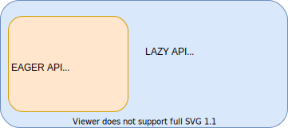
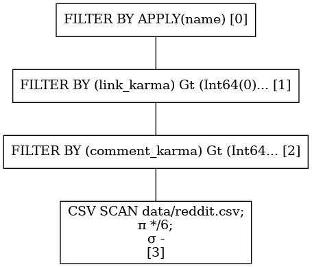
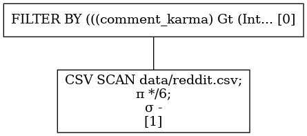
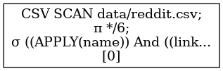
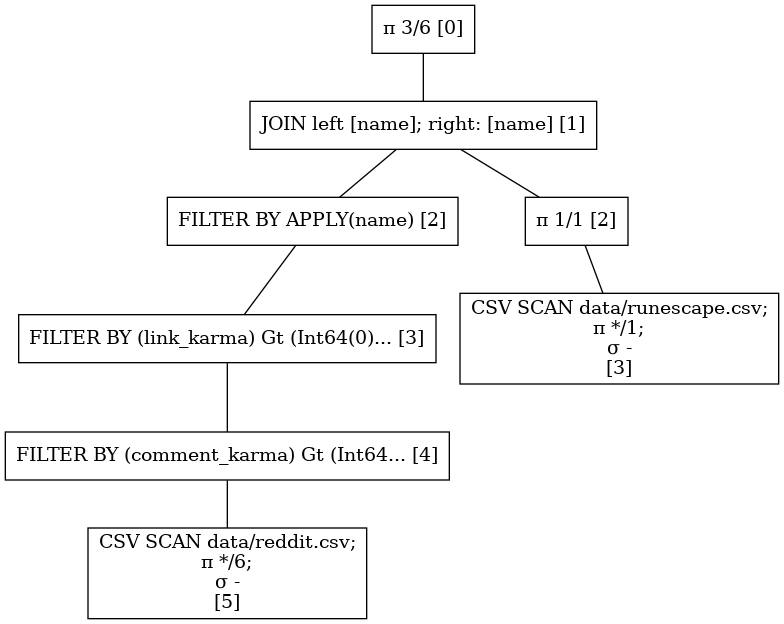
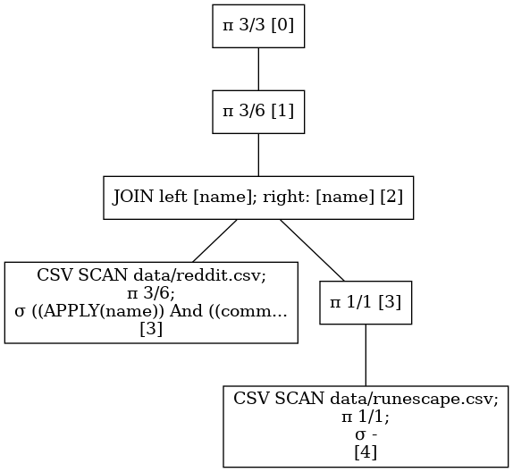

Introduction
This book is an introduction to the Polars DataFrame library. The goal is to explain the inner workings of Polars by going through several examples and making comparisons to other solutions. We'll discuss what some design choices have been and how you can use Polars optimally.
Even though Polars is a Rust library the examples shown will be using the Python wrappers. The Python api is the easiest to get started with and allows easier experimentation.
Goals and non-goals
The goal of Polars is being a fast DataFrame library that utilizes the available cores on your machine. Its ideal use case is data too big for pandas and too small for spark. Similar to spark Polars consists of a query planner that may (and probably does) optimize your query in order to do less work or reduce memory usage.
However if you really have big data that doesn't fit in memory of a single machine (even after filtering), Polars is not the solution to your problem.
Polars is completely written in Rust and has no runtime overhead. Python bindings are exposed, but are merely a thin wrapper and will not expose more functionality than the Rust library does.
It consists of an eager api that is similar to pandas. With eager we mean that an operation is immediately executed and produces a result.
The lazy api processes an interpretation of your query called a Logical Plan. This plan is optimized and reordered to
reduce query time and memory usage. When a result is requested Polars distributes the available work to different
Executors that use the algorithm available in the eager api to produce a result. Because the whole query context is
known to the optimizer and executors of the logical plan, processes dependent on separate data sources can be parallelized
on the fly.

Current status
This is a concise summary of the features that allow Polars to meet its goals.
- Copy on write semantics
- "Free" clones
- Cheap appends
- Column oriented data storage
- No block manager (i.e. predictable performance)
- Missing values indicated with bitmask
- NaN != Missing
- allows for bitmask optimizations
- Appending without clones
- Efficient algorithms
- Joins
- Groupby
- Sorting
- Melts
- Explodes
- Pivots
- And more...
- Query optimizations
- Predicate pushdown
- filtering at scan level
- Projection pushdown
- projection at scan level
- Simplify expressions
- Parallel execution of Physical plan
- Predicate pushdown
- SIMD vectorization
- numpy ufuncs work on Polars Series
Possibilities
- Memory mapped files
- Out of core analysis.
Acknowledgements
Development of Polars is proudly powered by

Getting started
Installation
Installing Polars is just a simple pip install. All binaries are pre-built for python >= 3.6.
$ pip3 install polars
Quick start
Below we show a simple snippet that parses a csv and does a filter followed by a groupby operation. The eager API must feel very similar to users familiar to pandas. The lazy api is more declarative and describes what you want, not how you want it.
Eager quickstart
import polars as pl
df = pl.read_csv("https://j.mp/iriscsv")
df[df["sepal_length"] > 5].groupby("species").sum()
Lazy quickstart
(pl.scan_csv("iris.csv")
.filter(pl.col("sepal_length") > 5)
.groupby("species")
.agg(pl.col("*").sum())
).collect()
This outputs:
| species | sepal_length_sum | sepal_width_sum | petal_length_sum | petal_width_sum |
|---|---|---|---|---|
| str | f64 | f64 | f64 | f64 |
| "setosa" | 116.9 | 81.7 | 33.2 | 6.1 |
| "virginica" | 324.5 | 146.2 | 273.1 | 99.6 |
| "versicolor" | 281.9 | 131.8 | 202.9 | 63.3 |
Reference guide
If you want to dive right into the API docs, follow one of these links.
Eager API
The eager API is similar to pandas. Operations are executed directly in an imperative manner. The important data structures are DataFrame's and Series
Lazy API
The lazy API builds a query plan. Nothing is executed until you explicitly ask polars to execute the query
(via LazyFrame.collect(), or LazyFrame.fetch). This provides polars with the entire context of the query and allows
for optimizations and choosing the fastest algorithm given that context.
LazyFrame
A LazyFrame is a DataFrame abstraction that lazily keeps track of the query plan.
Read more about the Lazy DataFrame operations.
Expr
The arguments given to a LazyFrame can be constructed by building simple or complex queries. See the examples in the
how can I? section in the book.
The API of the Expr can be found here.
IO
File IO
Polars support different file types and has its parsers are amongst the fastest there are. For instance,
it's faster to load a CSV via polars to pandas, than directly from pandas.
Just do pl.read_CSV("path.txt", rechunk=False).to_pandas() and you're off.
CSV files
So with that fun fact out of the way, loading a CSV file should be familiar:
Read CSV
import polars as pl
df = pl.read_csv("path.csv")
CSV files come in many different flavors, so make sure to check the read_CSV API
Writing to a CSV file can be done with to_csv
Write CSV
import polars as pl
df = pl.DataFrame({
"foo": [1, 2, 3],
"bar": [None, "egg", "spam"]
})
df.to_csv("path.csv")
Parquet files
Loading and writing parquet files are also as fast as can be. Pandas uses pyarrow to load parquet files into arrow memory and then has to copy that memory into pandas acceptable memory. In polars we don't have to pay that copy price, because we read parquet directly into arrow memory and we keep it there.
Read Parquet
import polars as pl
df = pl.read_parquet("path.csv")
Write Parquet
import polars as pl
df = pl.DataFrame({
"foo": [1, 2, 3],
"bar": [None, "egg", "spam"]
})
df.to_parquet("path.csv")
Scanning files
You can also scan a csv, and parquet files. Scanning delays the actual parsing of the files and returns a lazy computation
holder, called a LazyFrame. If you want to know why you'd want this (and you do!) read the lazy introduction
import polars as pl
# start a lazy query from a csv file.
lf = pl.scan_csv("path.csv")
# start a lazy query from a parquet file.
lf = pl.scan_parquet("path.parquet")
Reading a Parquet file from AWS s3
To read a parquet file from s3, you'll need to install additional dependencies:
$ pip install s3fs
Next we can load a parquet file from aws like this:
import s3fs
import polars as pl
import pyarrow.parquet as pq
fs = s3fs.S3FileSystem()
bucket = "your-bucket"
path = "your-path"
# load dataset
p_dataset = pq.ParquetDataset(
f"s3://{bucket}/{path}",
filesystem=fs
)
# read and convert to DataFrame
df = pl.from_arrow(p_dataset.read())
Lazy Polars
We directly skip the eager API and dive into the lazy API of Polars. We will be exploring its functionality by exploring two medium large datasets of usernames; the reddit usernames dataset containing 69+ Million rows and a runescape username dataset containing 55+ Million rows.
Let's write our first lines of Polars and see what kind of data we got. If you haven't done this already you can install
polars from PyPi: $ pip install --upgrade polars
Reddit data
import polars as pl
df = pl.read_csv("./data/reddit.csv", stop_after_n_rows=10)
df.head()
shape: (5, 6)
╭─────┬────────────────────────────┬─────────────┬────────────┬───────────────┬────────────╮
│ id ┆ name ┆ created_utc ┆ updated_on ┆ comment_karma ┆ link_karma │
│ --- ┆ --- ┆ --- ┆ --- ┆ --- ┆ --- │
│ i64 ┆ str ┆ i64 ┆ i64 ┆ i64 ┆ i64 │
╞═════╪════════════════════════════╪═════════════╪════════════╪═══════════════╪════════════╡
│ 1 ┆ "truman48lamb_jasonbroken" ┆ 1397113470 ┆ 1536527864 ┆ 0 ┆ 0 │
├╌╌╌╌╌┼╌╌╌╌╌╌╌╌╌╌╌╌╌╌╌╌╌╌╌╌╌╌╌╌╌╌╌╌┼╌╌╌╌╌╌╌╌╌╌╌╌╌┼╌╌╌╌╌╌╌╌╌╌╌╌┼╌╌╌╌╌╌╌╌╌╌╌╌╌╌╌┼╌╌╌╌╌╌╌╌╌╌╌╌┤
│ 2 ┆ "johnethen06_jasonbroken" ┆ 1397113483 ┆ 1536527864 ┆ 0 ┆ 0 │
├╌╌╌╌╌┼╌╌╌╌╌╌╌╌╌╌╌╌╌╌╌╌╌╌╌╌╌╌╌╌╌╌╌╌┼╌╌╌╌╌╌╌╌╌╌╌╌╌┼╌╌╌╌╌╌╌╌╌╌╌╌┼╌╌╌╌╌╌╌╌╌╌╌╌╌╌╌┼╌╌╌╌╌╌╌╌╌╌╌╌┤
│ 3 ┆ "yaseinrez_jasonbroken" ┆ 1397113483 ┆ 1536527864 ┆ 0 ┆ 1 │
├╌╌╌╌╌┼╌╌╌╌╌╌╌╌╌╌╌╌╌╌╌╌╌╌╌╌╌╌╌╌╌╌╌╌┼╌╌╌╌╌╌╌╌╌╌╌╌╌┼╌╌╌╌╌╌╌╌╌╌╌╌┼╌╌╌╌╌╌╌╌╌╌╌╌╌╌╌┼╌╌╌╌╌╌╌╌╌╌╌╌┤
│ 4 ┆ "Valve92_jasonbroken" ┆ 1397113503 ┆ 1536527864 ┆ 0 ┆ 0 │
├╌╌╌╌╌┼╌╌╌╌╌╌╌╌╌╌╌╌╌╌╌╌╌╌╌╌╌╌╌╌╌╌╌╌┼╌╌╌╌╌╌╌╌╌╌╌╌╌┼╌╌╌╌╌╌╌╌╌╌╌╌┼╌╌╌╌╌╌╌╌╌╌╌╌╌╌╌┼╌╌╌╌╌╌╌╌╌╌╌╌┤
│ 5 ┆ "srbhuyan_jasonbroken" ┆ 1397113506 ┆ 1536527864 ┆ 0 ┆ 0 │
╰─────┴────────────────────────────┴─────────────┴────────────┴───────────────┴────────────╯
Runescape data
df = pl.read_csv(
"./data/runescape.csv",
shape: (5, 1)
╭───────────────╮
│ column_1 │
│ --- │
│ str │
╞═══════════════╡
│ "a000" │
├╌╌╌╌╌╌╌╌╌╌╌╌╌╌╌┤
│ "a0000" │
├╌╌╌╌╌╌╌╌╌╌╌╌╌╌╌┤
│ "a000000" │
├╌╌╌╌╌╌╌╌╌╌╌╌╌╌╌┤
│ "a0000000" │
├╌╌╌╌╌╌╌╌╌╌╌╌╌╌╌┤
│ "a0000000000" │
╰───────────────╯
As we can see, Polars pretty prints the DataFrames and includes a header with column names and the data type of that column. If you want to learn more about the data types Polars supports, see the Rust reference for a proper description and the Python reference for the wrappers in Python.
Ok, that's easy enough. Next section we get into more interesting stuff. We will take a look at some optimizations Polars does regarding predicates.
Predicate pushdown
Predicate pushdown is an optimization Polars does that reduces query times and memory usage. A predicate is database jargon for applying a filter on some table and thereby reducing number the number of rows on that table.
So let's see if we can load some Reddit data and filter on a few predicates.
from polars.lazy import *
# A scan is a lazy read. This means nothing happens.
reddit = pl.scan_csv("data/reddit.csv")
reddit = (
reddit.filter(col("comment_karma") > 0) # only positive comment karma
.filter(col("link_karma") > 0) # only positive link karma
.filter(col("name").str_contains(r"^a")) # filter name that start with an "a"
)
If we were to run this query above, nothing would happen! This due to the lazyness, nothing will happend until specifically requested. This allows Polars to see the whole context of a query and optimize just in time for execution.
Execution is requested by the .collect method. This would query all available data. During writing/ optimizing/ checking
your query this is often not what you want. Another method that calls for execution is the .fetch method. .fetch takes
a parameter n_rows and tries to 'fetch' that number of rows at the data source (no guarantees are given though).
So let's "fetch" ~10 Million rows from the source file and apply the predicates.
reddit.fetch(n_rows=int(1e7))
shape: (286056, 6)
╭──────────────┬────────────────────┬─────────────┬────────────┬───────────────┬────────────╮
│ id ┆ name ┆ created_utc ┆ updated_on ┆ comment_karma ┆ link_karma │
│ --- ┆ --- ┆ --- ┆ --- ┆ --- ┆ --- │
│ i64 ┆ str ┆ i64 ┆ i64 ┆ i64 ┆ i64 │
╞══════════════╪════════════════════╪═════════════╪════════════╪═══════════════╪════════════╡
│ 77860 ┆ "aquarin" ┆ 1137474000 ┆ 1536528294 ┆ 150 ┆ 11 │
├╌╌╌╌╌╌╌╌╌╌╌╌╌╌┼╌╌╌╌╌╌╌╌╌╌╌╌╌╌╌╌╌╌╌╌┼╌╌╌╌╌╌╌╌╌╌╌╌╌┼╌╌╌╌╌╌╌╌╌╌╌╌┼╌╌╌╌╌╌╌╌╌╌╌╌╌╌╌┼╌╌╌╌╌╌╌╌╌╌╌╌┤
│ 77974 ┆ "aadvaark" ┆ 1137301200 ┆ 1536528294 ┆ 26 ┆ 47 │
├╌╌╌╌╌╌╌╌╌╌╌╌╌╌┼╌╌╌╌╌╌╌╌╌╌╌╌╌╌╌╌╌╌╌╌┼╌╌╌╌╌╌╌╌╌╌╌╌╌┼╌╌╌╌╌╌╌╌╌╌╌╌┼╌╌╌╌╌╌╌╌╌╌╌╌╌╌╌┼╌╌╌╌╌╌╌╌╌╌╌╌┤
│ 78004 ┆ "apoisel" ┆ 1137301200 ┆ 1536497404 ┆ 42 ┆ 2549 │
├╌╌╌╌╌╌╌╌╌╌╌╌╌╌┼╌╌╌╌╌╌╌╌╌╌╌╌╌╌╌╌╌╌╌╌┼╌╌╌╌╌╌╌╌╌╌╌╌╌┼╌╌╌╌╌╌╌╌╌╌╌╌┼╌╌╌╌╌╌╌╌╌╌╌╌╌╌╌┼╌╌╌╌╌╌╌╌╌╌╌╌┤
│ 78041 ┆ "aonic" ┆ 1137301200 ┆ 1536497404 ┆ 2931 ┆ 2095 │
├╌╌╌╌╌╌╌╌╌╌╌╌╌╌┼╌╌╌╌╌╌╌╌╌╌╌╌╌╌╌╌╌╌╌╌┼╌╌╌╌╌╌╌╌╌╌╌╌╌┼╌╌╌╌╌╌╌╌╌╌╌╌┼╌╌╌╌╌╌╌╌╌╌╌╌╌╌╌┼╌╌╌╌╌╌╌╌╌╌╌╌┤
│ ... ┆ ... ┆ ... ┆ ... ┆ ... ┆ ... │
├╌╌╌╌╌╌╌╌╌╌╌╌╌╌┼╌╌╌╌╌╌╌╌╌╌╌╌╌╌╌╌╌╌╌╌┼╌╌╌╌╌╌╌╌╌╌╌╌╌┼╌╌╌╌╌╌╌╌╌╌╌╌┼╌╌╌╌╌╌╌╌╌╌╌╌╌╌╌┼╌╌╌╌╌╌╌╌╌╌╌╌┤
│ 164422600931 ┆ "andro__throwaway" ┆ 1535637809 ┆ 1536828886 ┆ 16 ┆ 24 │
├╌╌╌╌╌╌╌╌╌╌╌╌╌╌┼╌╌╌╌╌╌╌╌╌╌╌╌╌╌╌╌╌╌╌╌┼╌╌╌╌╌╌╌╌╌╌╌╌╌┼╌╌╌╌╌╌╌╌╌╌╌╌┼╌╌╌╌╌╌╌╌╌╌╌╌╌╌╌┼╌╌╌╌╌╌╌╌╌╌╌╌┤
│ 164425093469 ┆ "aislynn4mayor" ┆ 1535638157 ┆ 1536828886 ┆ 31 ┆ 44 │
├╌╌╌╌╌╌╌╌╌╌╌╌╌╌┼╌╌╌╌╌╌╌╌╌╌╌╌╌╌╌╌╌╌╌╌┼╌╌╌╌╌╌╌╌╌╌╌╌╌┼╌╌╌╌╌╌╌╌╌╌╌╌┼╌╌╌╌╌╌╌╌╌╌╌╌╌╌╌┼╌╌╌╌╌╌╌╌╌╌╌╌┤
│ 164425210920 ┆ "archersheldon" ┆ 1535638216 ┆ 1536828886 ┆ 3 ┆ 6 │
├╌╌╌╌╌╌╌╌╌╌╌╌╌╌┼╌╌╌╌╌╌╌╌╌╌╌╌╌╌╌╌╌╌╌╌┼╌╌╌╌╌╌╌╌╌╌╌╌╌┼╌╌╌╌╌╌╌╌╌╌╌╌┼╌╌╌╌╌╌╌╌╌╌╌╌╌╌╌┼╌╌╌╌╌╌╌╌╌╌╌╌┤
│ 164452638720 ┆ "aidenread06" ┆ 1535641723 ┆ 1536828887 ┆ 5 ┆ 6 │
├╌╌╌╌╌╌╌╌╌╌╌╌╌╌┼╌╌╌╌╌╌╌╌╌╌╌╌╌╌╌╌╌╌╌╌┼╌╌╌╌╌╌╌╌╌╌╌╌╌┼╌╌╌╌╌╌╌╌╌╌╌╌┼╌╌╌╌╌╌╌╌╌╌╌╌╌╌╌┼╌╌╌╌╌╌╌╌╌╌╌╌┤
│ 164470954056 ┆ "alisha-hayes" ┆ 1535644043 ┆ 1536828888 ┆ 5 ┆ 16 │
╰──────────────┴────────────────────┴─────────────┴────────────┴───────────────┴────────────╯
Above we see that from the 10 Million rows, 61503 rows match our predicate.
Break it down
In Polars we can visualize the query plan. Let's take a look.
reddit.show_graph(optimized=False)

The astute reader maybe would notice that our query is not very optimal because we have 3 separate FILTER nodes. That means that after every FILTER a new DataFrame is allocated, which will be input to the next FILTER and then deleted from memory, that must be redundant. And you know what.. He/she is right, the predicates should be combined, we should have written this query:
reddit_2 = reddit.filter(
(col("comment_karma") > 0)
& (col("link_karma") > 0)
& (col("name").str_contains(r"^a"))
)
That would translate to:
reddit_2.show_graph(optimized=False)

As we can see the predicates are combined. This would lead to less copying of data
In comes optimization
Polars tries to save that mental overhead from the query writer and combines predicates for you. Besides that, it pushes predicates down to the scan level! Let's see how our optimized query looks.
reddit.show_graph(optimized=True)

It may be hard to see, but what is clear is that there is only a single node; the CSV SCAN. The predicate filtering is done during the reading of the csv. This means that this query's memory overhead is reduced by filtering factor! This makes a huge impact.
Memory
As we have seen there were ~ 62,000 rows left after the FILTER. That means that (aside for some memory overhead of the batch size and filter operations) we use \( \frac{6.2\text{e-}4}{1\text{e-}7} \sim 0.6 \text{%} \) of the memory we would during an eager evaluation where we first would read the whole table in memory before applying a filter.
Performance
At the time of writing this, the predicate pushdown also increased the query time performance.
without optimization
$ time time python -m book.src.examples.lazy_chapter.predicate_pushdown_0_timing False
real 0m2,401s
user 0m5,457s
sys 0m0,894s
with optimization
$ time time python -m book.src.examples.lazy_chapter.predicate_pushdown_0_timing True
real 0m1,597s
user 0m6,143s
sys 0m0,647s
Relational algebra
In the visualization of the query plan, you see a \( \sigma \) symbol. This indicates a Predicate done at the SCAN level. There is also a \( \pi \) symbol indicating projection (database jargon for column selection), but we'll get to that later.
Cheaper joins
Predicate pushdown optimization will generally also lead to cheaper join's. A join is quite an expensive operation the less rows we through at a join operation, the cheaper it becomes.
Projection pushdown
Let's expand our query from the previous section by joining the result of the FILTER operation with the runescape data to see which popular Reddit username that have a username starting with an a also played Runescape. That must be something we are all interested in!
The query that does so may look like this.
reddit = pl.scan_csv("data/reddit.csv")
runescape = pl.scan_csv("data/runescape.csv", has_headers=False).select(
col("column_1").alias("name")
)
reddit = (
reddit.filter(col("comment_karma") > 0)
.filter(col("link_karma") > 0)
.filter(col("name").str_contains(r"^a"))
)
joined = reddit.join(runescape, on="name", how="inner").select(
["name", "comment_karma", "link_karma"]
)
joined.fetch(int(1e7))
And yields the following DataFrame.
shape: (18953, 3)
╭─────────────┬───────────────┬────────────╮
│ name ┆ comment_karma ┆ link_karma │
│ --- ┆ --- ┆ --- │
│ str ┆ i64 ┆ i64 │
╞═════════════╪═══════════════╪════════════╡
│ "a00153" ┆ 2628 ┆ 13 │
├╌╌╌╌╌╌╌╌╌╌╌╌╌┼╌╌╌╌╌╌╌╌╌╌╌╌╌╌╌┼╌╌╌╌╌╌╌╌╌╌╌╌┤
│ "a0110a" ┆ 158 ┆ 6 │
├╌╌╌╌╌╌╌╌╌╌╌╌╌┼╌╌╌╌╌╌╌╌╌╌╌╌╌╌╌┼╌╌╌╌╌╌╌╌╌╌╌╌┤
│ "a097" ┆ 674 ┆ 4564 │
├╌╌╌╌╌╌╌╌╌╌╌╌╌┼╌╌╌╌╌╌╌╌╌╌╌╌╌╌╌┼╌╌╌╌╌╌╌╌╌╌╌╌┤
│ "a0990" ┆ 44 ┆ 10 │
├╌╌╌╌╌╌╌╌╌╌╌╌╌┼╌╌╌╌╌╌╌╌╌╌╌╌╌╌╌┼╌╌╌╌╌╌╌╌╌╌╌╌┤
│ ... ┆ ... ┆ ... │
├╌╌╌╌╌╌╌╌╌╌╌╌╌┼╌╌╌╌╌╌╌╌╌╌╌╌╌╌╌┼╌╌╌╌╌╌╌╌╌╌╌╌┤
│ "azzure11" ┆ 264 ┆ 509 │
├╌╌╌╌╌╌╌╌╌╌╌╌╌┼╌╌╌╌╌╌╌╌╌╌╌╌╌╌╌┼╌╌╌╌╌╌╌╌╌╌╌╌┤
│ "azzuron" ┆ 164 ┆ 56 │
├╌╌╌╌╌╌╌╌╌╌╌╌╌┼╌╌╌╌╌╌╌╌╌╌╌╌╌╌╌┼╌╌╌╌╌╌╌╌╌╌╌╌┤
│ "azzurri10" ┆ 51868 ┆ 3353 │
├╌╌╌╌╌╌╌╌╌╌╌╌╌┼╌╌╌╌╌╌╌╌╌╌╌╌╌╌╌┼╌╌╌╌╌╌╌╌╌╌╌╌┤
│ "azzwhole" ┆ 18198 ┆ 311 │
├╌╌╌╌╌╌╌╌╌╌╌╌╌┼╌╌╌╌╌╌╌╌╌╌╌╌╌╌╌┼╌╌╌╌╌╌╌╌╌╌╌╌┤
│ "azzzr" ┆ 308 ┆ 526 │
╰─────────────┴───────────────┴────────────╯
Break it down
Again, let's take a look the query plan.
joined.show_graph(optimized=False)

Now were focussed on the projection's indicated with π. The first node shows π 3/6, indicating that we select 3 out of 6 columns in the DataFrame. If we look the csv scans we see a wildcard π */6 and π */1 meaning that we select all of 6 columns of the reddit dataset and the one and only column from the runescape dataset respectively.
This query is not very optimal. We select all columns from both datasets and only show 3/6 after join. That means that there were some columns computed during the join operation that could have been ignored. There were also columns parsed during csv scanning only to be dropped at the end. When we are dealing with DataFrame's with a large number of columns the redundant work that is done can be huge.
Optimized query
Let's see how Polars optimizes this query.
joined.show_graph(optimized=True)

The projections are pushed down the join operation all the way to the csv scans. This means that both the scanning and join operation have become cheaper due to the query optimization.
Performance
Let's time the result before and after optimization.
without optimization
$ time time python -m book.src.examples.lazy_chapter.projection_pushdown_0_timing False
real 0m3,273s
user 0m9,284s
sys 0m1,081s
with optimization
$ time time python -m book.src.examples.lazy_chapter.projection_pushdown_0_timing True
real 0m1,732s
user 0m7,581s
sys 0m0,783s
We can see that we almost reduced query time by half on this simple query. With real business data often comprising of many column, filtering missing data, doing complex groupby and joins we expect this difference between unoptimized queries and optimized queries to only grow.
Other optimizations
Besides predicate and projection pushdown, Polars does other optimizations.
One important one is optional caching and parallelization. One can imagine having two different DataFrame computations that lead to a scan of the same file. Polars may cache the scanned file to prevent scanning the same file twice. However, if you want to, you may override this behavior and force polars to read the same file. This could be faster because the scan could be done in parallel.
Join parallelization
If we look at the previous query, we see that the join operation has as input a computation path with data/reddit.csv
as root and one path with data/runescape.csv as root. Polars can observe that there are no dependencies between the
two DataFrame and will read both files in parallel. If other operations are done before the join (e.g. groupby, filters, etc.)
they are also executed in parallel.
Simplify expressions
Some other optimizations that are done are expression simplifications. The impact of these optimizations is less than that of predicate and projection pushdown, but they likely add up. You can track this issue to see the latest status of those.
How can I?
This chapter contains some small examples that will get you up to speed with the most idiomatic way to get things done in Polars lazy.
Are you more interested in getting up to speed with Polars eager? Check the 10 minutes to Polars notebook.
How can I groupby?
The groupby operations is done with the .groupby method following by the .agg method.
In the .agg method you can do as many aggregations on as many columns as you want.
If you want to do a specific aggregation on all columns you can use the wildcard expression: .agg(col("*").sum())
Examples
import polars as pl
from polars.lazy import col
reddit = (
pl.scan_csv("data/reddit.csv")
.groupby("comment_karma")
.agg([col("name").n_unique().alias("unique_names"), pl.max("link_karma")])
.sort(by_column="unique_names", reverse=True)
reddit.fetch()
shape: (100, 3)
╭───────────────┬──────────────┬────────────────╮
│ comment_karma ┆ unique_names ┆ link_karma_max │
│ --- ┆ --- ┆ --- │
│ i64 ┆ u32 ┆ i64 │
╞═══════════════╪══════════════╪════════════════╡
│ 0 ┆ 367 ┆ 611 │
├╌╌╌╌╌╌╌╌╌╌╌╌╌╌╌┼╌╌╌╌╌╌╌╌╌╌╌╌╌╌┼╌╌╌╌╌╌╌╌╌╌╌╌╌╌╌╌┤
│ 1 ┆ 9 ┆ 22 │
├╌╌╌╌╌╌╌╌╌╌╌╌╌╌╌┼╌╌╌╌╌╌╌╌╌╌╌╌╌╌┼╌╌╌╌╌╌╌╌╌╌╌╌╌╌╌╌┤
│ 3 ┆ 6 ┆ 1 │
├╌╌╌╌╌╌╌╌╌╌╌╌╌╌╌┼╌╌╌╌╌╌╌╌╌╌╌╌╌╌┼╌╌╌╌╌╌╌╌╌╌╌╌╌╌╌╌┤
│ 38 ┆ 4 ┆ 291 │
├╌╌╌╌╌╌╌╌╌╌╌╌╌╌╌┼╌╌╌╌╌╌╌╌╌╌╌╌╌╌┼╌╌╌╌╌╌╌╌╌╌╌╌╌╌╌╌┤
│ ... ┆ ... ┆ ... │
├╌╌╌╌╌╌╌╌╌╌╌╌╌╌╌┼╌╌╌╌╌╌╌╌╌╌╌╌╌╌┼╌╌╌╌╌╌╌╌╌╌╌╌╌╌╌╌┤
│ 65 ┆ 1 ┆ 0 │
├╌╌╌╌╌╌╌╌╌╌╌╌╌╌╌┼╌╌╌╌╌╌╌╌╌╌╌╌╌╌┼╌╌╌╌╌╌╌╌╌╌╌╌╌╌╌╌┤
│ 63167 ┆ 1 ┆ 24137 │
├╌╌╌╌╌╌╌╌╌╌╌╌╌╌╌┼╌╌╌╌╌╌╌╌╌╌╌╌╌╌┼╌╌╌╌╌╌╌╌╌╌╌╌╌╌╌╌┤
│ 2335 ┆ 1 ┆ 146 │
├╌╌╌╌╌╌╌╌╌╌╌╌╌╌╌┼╌╌╌╌╌╌╌╌╌╌╌╌╌╌┼╌╌╌╌╌╌╌╌╌╌╌╌╌╌╌╌┤
│ 706 ┆ 1 ┆ 410 │
├╌╌╌╌╌╌╌╌╌╌╌╌╌╌╌┼╌╌╌╌╌╌╌╌╌╌╌╌╌╌┼╌╌╌╌╌╌╌╌╌╌╌╌╌╌╌╌┤
│ 78 ┆ 1 ┆ 1 │
╰───────────────┴──────────────┴────────────────╯
How can I aggregate?
Aggregations can be done in a .select or a .with_column/with_columns method.
If you want to do a specific aggregation on all columns you can use the wildcard expression: .select(col("*").sum())
The aggregation functions available are (may be outdated):
Examples
import polars as pl
from polars.lazy import *
reddit = pl.scan_csv("data/reddit.csv").select(
[pl.sum("comment_karma"), pl.min("link_karma")]
)
reddit.fetch()
shape: (1, 2)
╭───────────────┬────────────╮
│ comment_karma ┆ link_karma │
│ --- ┆ --- │
│ i64 ┆ i64 │
╞═══════════════╪════════════╡
│ 242649 ┆ -109 │
╰───────────────┴────────────╯
How can I conditionally apply
You often want to modify or add a column to DataFrame based on some condition/predicate. This is where
the when().then().otherwise() expressions are for. As they are basically a full English sentence, they need no further
explanation.
Examples
import polars as pl
from polars.lazy import col, when
import numpy as np
df = pl.DataFrame({"range": np.arange(10), "left": ["foo"] * 10, "right": ["bar"] * 10})
out = df.lazy().with_column(
when(col("range") >= 5)
.then(col("left"))
.otherwise(col("right"))
print(out.collect())
shape: (10, 4)
╭───────┬───────┬───────┬────────────╮
│ range ┆ left ┆ right ┆ foo_or_bar │
│ --- ┆ --- ┆ --- ┆ --- │
│ i64 ┆ str ┆ str ┆ str │
╞═══════╪═══════╪═══════╪════════════╡
│ 0 ┆ "foo" ┆ "bar" ┆ "bar" │
├╌╌╌╌╌╌╌┼╌╌╌╌╌╌╌┼╌╌╌╌╌╌╌┼╌╌╌╌╌╌╌╌╌╌╌╌┤
│ 1 ┆ "foo" ┆ "bar" ┆ "bar" │
├╌╌╌╌╌╌╌┼╌╌╌╌╌╌╌┼╌╌╌╌╌╌╌┼╌╌╌╌╌╌╌╌╌╌╌╌┤
│ 2 ┆ "foo" ┆ "bar" ┆ "bar" │
├╌╌╌╌╌╌╌┼╌╌╌╌╌╌╌┼╌╌╌╌╌╌╌┼╌╌╌╌╌╌╌╌╌╌╌╌┤
│ 3 ┆ "foo" ┆ "bar" ┆ "bar" │
├╌╌╌╌╌╌╌┼╌╌╌╌╌╌╌┼╌╌╌╌╌╌╌┼╌╌╌╌╌╌╌╌╌╌╌╌┤
│ ... ┆ ... ┆ ... ┆ ... │
├╌╌╌╌╌╌╌┼╌╌╌╌╌╌╌┼╌╌╌╌╌╌╌┼╌╌╌╌╌╌╌╌╌╌╌╌┤
│ 5 ┆ "foo" ┆ "bar" ┆ "foo" │
├╌╌╌╌╌╌╌┼╌╌╌╌╌╌╌┼╌╌╌╌╌╌╌┼╌╌╌╌╌╌╌╌╌╌╌╌┤
│ 6 ┆ "foo" ┆ "bar" ┆ "foo" │
├╌╌╌╌╌╌╌┼╌╌╌╌╌╌╌┼╌╌╌╌╌╌╌┼╌╌╌╌╌╌╌╌╌╌╌╌┤
│ 7 ┆ "foo" ┆ "bar" ┆ "foo" │
├╌╌╌╌╌╌╌┼╌╌╌╌╌╌╌┼╌╌╌╌╌╌╌┼╌╌╌╌╌╌╌╌╌╌╌╌┤
│ 8 ┆ "foo" ┆ "bar" ┆ "foo" │
├╌╌╌╌╌╌╌┼╌╌╌╌╌╌╌┼╌╌╌╌╌╌╌┼╌╌╌╌╌╌╌╌╌╌╌╌┤
│ 9 ┆ "foo" ┆ "bar" ┆ "foo" │
╰───────┴───────┴───────┴────────────╯
Date parsing
Polars has two date data types:
- Date32
- a naive date represented as the number of days since the unix epoch as a 32 bit signed integer.
- Use this for Date objects
- Date64
- a naive datetime represented as the number of milliseconds since the unix epoch as a 64 bit signed integer.
- Use this for DateTime objects
Utf8 types can be parsed as one of the two date datetypes. You can try to let Polars parse the date(time) implicitly or
apply you fmt rule. Some examples are:
"%Y-%m-%d"for"2020-12-31""%Y/%B/%d"for"2020/December/31""%B %y"for"December 20"
Examples
df = pl.DataFrame(
{"date": ["2020-01-02", "2020-01-03", "2020-01-04"], "index": [1, 2, 3]}
)
parsed = df.lazy().with_column(
col("date").str_parse_date(pl.datatypes.Date32, "%Y-%m-%d")
)
print(parsed.collect())
shape: (3, 2)
╭──────────────┬───────╮
│ date ┆ index │
│ --- ┆ --- │
│ date32(days) ┆ i64 │
╞══════════════╪═══════╡
│ 2020-01-02 ┆ 1 │
├╌╌╌╌╌╌╌╌╌╌╌╌╌╌┼╌╌╌╌╌╌╌┤
│ 2020-01-03 ┆ 2 │
├╌╌╌╌╌╌╌╌╌╌╌╌╌╌┼╌╌╌╌╌╌╌┤
│ 2020-01-04 ┆ 3 │
╰──────────────┴───────╯
How can I use custom functions?
There will always be an operation so sketchy, so dirty, so grotesque, that you cannot do with the public API of Polars. Luckily we provide UDFs (User Defined Functions). This means you can define a python function/ lambda and pass it to the logical plan. You can use custom functions in both the eager API as well as the lazy API.
Examples
Let's start with eager. Let's say we want to apply a map to a Series. This could be done as shown below.
Eager
my_map = {1: "foo", 2: "bar", 3: "ham", 4: "spam", 5: "eggs"}
s = pl.Series("a", [1, 2, 3, 4, 5])
s = s.apply(lambda x: my_map[x])
print(s.collect())
Series: 'a' [str]
[
"foo"
"bar"
"ham"
"spam"
"eggs"
]
There are a few gotcha's however. Polars Series can only contain a single datatype. (storing custom Python objects is being worked on)
In the .apply method above we didn't specify the data type the Series should contain. Polars tries to infer the output
datatype beforehand by calling the provided function itself. If it later gets a data type that does not matched the
initially inferred type, the value will be indicated as missing: null. If you already know the output datatype you need
it's recommended to provide this information to Polars.
s.apply(lambda x: my_map[x], dtype_out=pl.Utf8)
Lazy
In lazy you can apply custom functions via the .map and the .apply methods.
map
You can use map to map from a Series to a Series or a DataFrame to
a DataFrame.
apply
Or you can use apply to operate on the values of a Series. The function passed to .apply operate on a single primitive
(e.g. int, str, bool).
The lambda we used above got int as input and returned str after finding the right key in the dictionary.
When a custom function is used, the output type must also be provided because for the optimizer to be able to do optimizations the Schema of the query needs to be known at all times.
import polars as pl
from polars.lazy import *
import numpy as np
np.random.seed(1)
df = pl.DataFrame({"foo": np.arange(10), "bar": np.random.rand(10)})
# create a udf
def my_custom_func(s: Series) -> Series:
return np.exp(s) / np.log(s)
# a simple wrapper that take a function and sets output type
my_udf = udf(my_custom_func, output_type=pl.Float64)
# run query with udf
out = df.lazy().filter(col("bar").map(my_udf) > -1)
print(s.collect())
shape: (4, 2)
╭─────┬───────╮
│ foo ┆ bar │
│ --- ┆ --- │
│ i64 ┆ f64 │
╞═════╪═══════╡
│ 2 ┆ 0.0 │
├╌╌╌╌╌┼╌╌╌╌╌╌╌┤
│ 4 ┆ 0.147 │
├╌╌╌╌╌┼╌╌╌╌╌╌╌┤
│ 5 ┆ 0.092 │
├╌╌╌╌╌┼╌╌╌╌╌╌╌┤
│ 6 ┆ 0.186 │
╰─────┴───────╯
Above we've defined out own function, added this to the lazy query and it got executed during execution of the physical plan.
This of course greatly increases flexibility of a query and when needed you are definitely encouraged to do so. This is however
not without cost. Even though we only use vectorized code in this example (numpy functions and Polars comparisons), this query
may still be slower than a full Polars native query. This is due to the Python GIL. As mentioned before, polars tries to parallelize
the query execution on the available cores on your machine. However, in Python there may only be one thread modifying Python objects.
So if you have many UDF's they'd have to wait in line until they are allowed there GIL time.
Apply
Similarly as done in the eager example, we can also apply a lambda over the elements of a Series:
import polars as pl
from polars.lazy import *
my_map = {1: "foo", 2: "bar", 3: "ham", 4: "spam", 5: "eggs"}
df = pl.DataFrame({"foo": [1, 2, 3, 4, 5]})
# create a udf
def my_custom_func(s: Series) -> Series:
return s.apply(lambda x: my_map[x])
# run query with udf
out = df.lazy().with_column(col("foo").map(my_custom_func).alias("mapped"))
print(out.collect())
shape: (5, 2)
╭─────┬────────╮
│ foo ┆ mapped │
│ --- ┆ --- │
│ i64 ┆ str │
╞═════╪════════╡
│ 1 ┆ "foo" │
├╌╌╌╌╌┼╌╌╌╌╌╌╌╌┤
│ 2 ┆ "bar" │
├╌╌╌╌╌┼╌╌╌╌╌╌╌╌┤
│ 3 ┆ "ham" │
├╌╌╌╌╌┼╌╌╌╌╌╌╌╌┤
│ 4 ┆ "spam" │
├╌╌╌╌╌┼╌╌╌╌╌╌╌╌┤
│ 5 ┆ "eggs" │
╰─────┴────────╯
GroupBy
You can also use custom functions in a GroupBy context. The most intuitive way to apply custom functions is with the
apply_groups method. This method will receive a Series of every group as input. Below we'll show 3 ways the get
the length of the groups, where 2 use custom functions.
import polars as pl
from polars.lazy import *
df = pl.DataFrame(
{
"A": [1, 2, 3, 4, 5],
"fruits": ["banana", "banana", "apple", "apple", "banana"],
"B": [5, 4, 3, 2, 1],
"cars": ["beetle", "audi", "beetle", "beetle", "beetle"],
}
)
# two ways to determine the length groups.
out = (
df.lazy()
.groupby("fruits")
.agg(
[
col("cars").apply(lambda groups: groups.len()).alias("custom_1"),
col("cars").apply(lambda groups: groups.len()).alias("custom_2"),
pl.count("cars"),
]
)
)
print(out.collect())
shape: (2, 4)
╭──────────┬──────────┬──────────┬────────────╮
│ fruits ┆ custom_1 ┆ custom_2 ┆ cars_count │
│ --- ┆ --- ┆ --- ┆ --- │
│ str ┆ i64 ┆ i64 ┆ u32 │
╞══════════╪══════════╪══════════╪════════════╡
│ "apple" ┆ 2 ┆ 2 ┆ 2 │
├╌╌╌╌╌╌╌╌╌╌┼╌╌╌╌╌╌╌╌╌╌┼╌╌╌╌╌╌╌╌╌╌┼╌╌╌╌╌╌╌╌╌╌╌╌┤
│ "banana" ┆ 3 ┆ 3 ┆ 3 │
╰──────────┴──────────┴──────────┴────────────╯
How can I process strings
Polars exposes fast string processing methods.
These operations are very fast as opposed to string operations in numpy / Pandas. In the latter, strings are stored as Python objects and during traversal the array/ Series the cpu needs to follow all the string pointers to different memory locations which expensive.
In Polars/ Arrow the strings are contiguous in memory and traversal is cache optimal and predictable for the cpu.
The string processing functions available are:
- str_parse_date
- str_contains
- str_lengths
- str_replace
- str_replace_all
- str_to_lowercase
- str_to_uppercase
Examples
string lengths
import polars as pl
from polars.lazy import col
df = pl.DataFrame({"shakespeare": "All that glitters is not gold".split(" ")})
str_lengths = df.lazy().with_column(
col("shakespeare").str_lengths().alias("letter_count")
print(str_lengths.collect())
shape: (6, 2)
╭─────────────┬──────────────╮
│ shakespeare ┆ letter_count │
│ --- ┆ --- │
│ str ┆ u32 │
╞═════════════╪══════════════╡
│ "All" ┆ 3 │
├╌╌╌╌╌╌╌╌╌╌╌╌╌┼╌╌╌╌╌╌╌╌╌╌╌╌╌╌┤
│ "that" ┆ 4 │
├╌╌╌╌╌╌╌╌╌╌╌╌╌┼╌╌╌╌╌╌╌╌╌╌╌╌╌╌┤
│ "glitters" ┆ 8 │
├╌╌╌╌╌╌╌╌╌╌╌╌╌┼╌╌╌╌╌╌╌╌╌╌╌╌╌╌┤
│ "is" ┆ 2 │
├╌╌╌╌╌╌╌╌╌╌╌╌╌┼╌╌╌╌╌╌╌╌╌╌╌╌╌╌┤
│ "not" ┆ 3 │
├╌╌╌╌╌╌╌╌╌╌╌╌╌┼╌╌╌╌╌╌╌╌╌╌╌╌╌╌┤
│ "gold" ┆ 4 │
╰─────────────┴──────────────╯
contains
Below we use a regex pattern to filter articles (the, a, and, etc.) from a sentence.
df = pl.DataFrame({"a": "The man that ate a whole cake".split(" ")})
filtered = df.lazy().filter(col("a").str_contains(r"(?i)^the$|^a$").is_not())
print(filtered.collect())
shape: (5, 1)
╭─────────╮
│ a │
│ --- │
│ str │
╞═════════╡
│ "man" │
├╌╌╌╌╌╌╌╌╌┤
│ "that" │
├╌╌╌╌╌╌╌╌╌┤
│ "ate" │
├╌╌╌╌╌╌╌╌╌┤
│ "whole" │
├╌╌╌╌╌╌╌╌╌┤
│ "cake" │
╰─────────╯
How can I apply window functions?
Polars supports window functions inspired by postgres. Pandas
users may know these as a groupby.transform(aggregation).
Polars window functions are much more elegant than Pandas transform. We can apply multiple functions over multiple columns in single expression!
Examples
import polars as pl
df = pl.DataFrame(
{
"A": [1, 2, 3, 4, 5],
"fruits": ["banana", "banana", "apple", "apple", "banana"],
"B": [5, 4, 3, 2, 1],
"cars": ["beetle", "audi", "beetle", "beetle", "beetle"],
}
)
print(df)
shape: (5, 4)
╭─────┬──────────┬─────┬──────────╮
│ A ┆ fruits ┆ B ┆ cars │
│ --- ┆ --- ┆ --- ┆ --- │
│ i64 ┆ str ┆ i64 ┆ str │
╞═════╪══════════╪═════╪══════════╡
│ 1 ┆ "banana" ┆ 5 ┆ "beetle" │
├╌╌╌╌╌┼╌╌╌╌╌╌╌╌╌╌┼╌╌╌╌╌┼╌╌╌╌╌╌╌╌╌╌┤
│ 2 ┆ "banana" ┆ 4 ┆ "audi" │
├╌╌╌╌╌┼╌╌╌╌╌╌╌╌╌╌┼╌╌╌╌╌┼╌╌╌╌╌╌╌╌╌╌┤
│ 3 ┆ "apple" ┆ 3 ┆ "beetle" │
├╌╌╌╌╌┼╌╌╌╌╌╌╌╌╌╌┼╌╌╌╌╌┼╌╌╌╌╌╌╌╌╌╌┤
│ 4 ┆ "apple" ┆ 2 ┆ "beetle" │
├╌╌╌╌╌┼╌╌╌╌╌╌╌╌╌╌┼╌╌╌╌╌┼╌╌╌╌╌╌╌╌╌╌┤
│ 5 ┆ "banana" ┆ 1 ┆ "beetle" │
╰─────┴──────────┴─────┴──────────╯
windows = df.lazy().with_columns(
[
pl.sum("A").over("fruits").alias("fruit_sum_A"),
pl.first("B").over("fruits").alias("fruit_first_B"),
pl.max("B").over("cars").alias("cars_max_B"),
]
)
print(windows.collect())
shape: (5, 7)
╭─────┬──────────┬─────┬──────────┬─────────────┬───────────────┬────────────╮
│ A ┆ fruits ┆ B ┆ cars ┆ fruit_sum_A ┆ fruit_first_B ┆ cars_max_B │
│ --- ┆ --- ┆ --- ┆ --- ┆ --- ┆ --- ┆ --- │
│ i64 ┆ str ┆ i64 ┆ str ┆ i64 ┆ i64 ┆ i64 │
╞═════╪══════════╪═════╪══════════╪═════════════╪═══════════════╪════════════╡
│ 1 ┆ "banana" ┆ 5 ┆ "beetle" ┆ 8 ┆ 5 ┆ 5 │
├╌╌╌╌╌┼╌╌╌╌╌╌╌╌╌╌┼╌╌╌╌╌┼╌╌╌╌╌╌╌╌╌╌┼╌╌╌╌╌╌╌╌╌╌╌╌╌┼╌╌╌╌╌╌╌╌╌╌╌╌╌╌╌┼╌╌╌╌╌╌╌╌╌╌╌╌┤
│ 2 ┆ "banana" ┆ 4 ┆ "audi" ┆ 8 ┆ 5 ┆ 4 │
├╌╌╌╌╌┼╌╌╌╌╌╌╌╌╌╌┼╌╌╌╌╌┼╌╌╌╌╌╌╌╌╌╌┼╌╌╌╌╌╌╌╌╌╌╌╌╌┼╌╌╌╌╌╌╌╌╌╌╌╌╌╌╌┼╌╌╌╌╌╌╌╌╌╌╌╌┤
│ 3 ┆ "apple" ┆ 3 ┆ "beetle" ┆ 7 ┆ 3 ┆ 5 │
├╌╌╌╌╌┼╌╌╌╌╌╌╌╌╌╌┼╌╌╌╌╌┼╌╌╌╌╌╌╌╌╌╌┼╌╌╌╌╌╌╌╌╌╌╌╌╌┼╌╌╌╌╌╌╌╌╌╌╌╌╌╌╌┼╌╌╌╌╌╌╌╌╌╌╌╌┤
│ 4 ┆ "apple" ┆ 2 ┆ "beetle" ┆ 7 ┆ 3 ┆ 5 │
├╌╌╌╌╌┼╌╌╌╌╌╌╌╌╌╌┼╌╌╌╌╌┼╌╌╌╌╌╌╌╌╌╌┼╌╌╌╌╌╌╌╌╌╌╌╌╌┼╌╌╌╌╌╌╌╌╌╌╌╌╌╌╌┼╌╌╌╌╌╌╌╌╌╌╌╌┤
│ 5 ┆ "banana" ┆ 1 ┆ "beetle" ┆ 8 ┆ 5 ┆ 5 │
╰─────┴──────────┴─────┴──────────┴─────────────┴───────────────┴────────────╯
How can I split / apply / combine?
This example shows how you idiomatically would determine differences per group. Let's imagine we have a dataset with some unique identifier uid, some dates per uid as date column, and a number of cumulative COVID cases per date.
Now we want to find the determine the difference (i.e. the increase of COVID cases per day per group.)
Dataset setup
First we create the example dataset of this problem.
import polars as pl
from polars.lazy import col, lit
import numpy as np
uid = [item for sublist in [4 * [r] for r in range(3)] for item in sublist]
date = [
"2020-12-20",
"2020-12-21",
"2020-12-22",
"2020-12-23",
]
cumcases = [20, 40, 67, 80]
df = pl.DataFrame(
{
"uid": uid,
"date": np.hstack([date, date, date]),
"cumcases": np.hstack(
[cumcases, [2 * c for c in cumcases], [3 * c for c in cumcases]]
),
}
)
print(df)
shape: (12, 3)
╭─────┬──────────────┬──────────╮
│ uid ┆ date ┆ cumcases │
│ --- ┆ --- ┆ --- │
│ i64 ┆ str ┆ i64 │
╞═════╪══════════════╪══════════╡
│ 0 ┆ "2020-12-20" ┆ 20 │
├╌╌╌╌╌┼╌╌╌╌╌╌╌╌╌╌╌╌╌╌┼╌╌╌╌╌╌╌╌╌╌┤
│ 0 ┆ "2020-12-21" ┆ 40 │
├╌╌╌╌╌┼╌╌╌╌╌╌╌╌╌╌╌╌╌╌┼╌╌╌╌╌╌╌╌╌╌┤
│ 0 ┆ "2020-12-22" ┆ 67 │
├╌╌╌╌╌┼╌╌╌╌╌╌╌╌╌╌╌╌╌╌┼╌╌╌╌╌╌╌╌╌╌┤
│ 0 ┆ "2020-12-23" ┆ 80 │
├╌╌╌╌╌┼╌╌╌╌╌╌╌╌╌╌╌╌╌╌┼╌╌╌╌╌╌╌╌╌╌┤
│ ... ┆ ... ┆ ... │
├╌╌╌╌╌┼╌╌╌╌╌╌╌╌╌╌╌╌╌╌┼╌╌╌╌╌╌╌╌╌╌┤
│ 1 ┆ "2020-12-23" ┆ 160 │
├╌╌╌╌╌┼╌╌╌╌╌╌╌╌╌╌╌╌╌╌┼╌╌╌╌╌╌╌╌╌╌┤
│ 2 ┆ "2020-12-20" ┆ 60 │
├╌╌╌╌╌┼╌╌╌╌╌╌╌╌╌╌╌╌╌╌┼╌╌╌╌╌╌╌╌╌╌┤
│ 2 ┆ "2020-12-21" ┆ 120 │
├╌╌╌╌╌┼╌╌╌╌╌╌╌╌╌╌╌╌╌╌┼╌╌╌╌╌╌╌╌╌╌┤
│ 2 ┆ "2020-12-22" ┆ 201 │
├╌╌╌╌╌┼╌╌╌╌╌╌╌╌╌╌╌╌╌╌┼╌╌╌╌╌╌╌╌╌╌┤
│ 2 ┆ "2020-12-23" ┆ 240 │
╰─────┴──────────────┴──────────╯
Query
def mkdiff(cumcases: pl.Series) -> pl.Series:
"""
Creates a new Series with differences per row
"""
return cumcases - cumcases.shift(1)
base_df = (
df.lazy()
# first parse column as date32
.with_column(col("date").str_parse_date(pl.Date32))
# next create a sorting key defined by the group uid + date_integer
.with_column(
(col("uid").cast(str) + lit("-") + col("date").cast(int)).alias("sort_key")
)
# sort all values on the sorting key so that
# the mkdiff function get's sorted values on date per group
.sort("sort_key")
)
# Next we group by uid and aggregate to different
# Series lists that we later explode and join back on the main DataFrame
out = (
base_df.groupby("uid")
.agg(
[
col("date").list().alias("date"),
col("cumcases").apply(mkdiff).alias("diff_cases"),
]
)
.explode(["date", "diff_cases"])
.join(base_df, on=["uid", "date"])
)
print(df)
shape: (12, 5)
╭─────┬──────────────┬────────────┬──────────┬───────────╮
│ uid ┆ date ┆ diff_cases ┆ cumcases ┆ sort_key │
│ --- ┆ --- ┆ --- ┆ --- ┆ --- │
│ i64 ┆ date32(days) ┆ i64 ┆ i64 ┆ str │
╞═════╪══════════════╪════════════╪══════════╪═══════════╡
│ 0 ┆ 2020-12-20 ┆ null ┆ 20 ┆ "0-18616" │
├╌╌╌╌╌┼╌╌╌╌╌╌╌╌╌╌╌╌╌╌┼╌╌╌╌╌╌╌╌╌╌╌╌┼╌╌╌╌╌╌╌╌╌╌┼╌╌╌╌╌╌╌╌╌╌╌┤
│ 0 ┆ 2020-12-21 ┆ 20 ┆ 40 ┆ "0-18617" │
├╌╌╌╌╌┼╌╌╌╌╌╌╌╌╌╌╌╌╌╌┼╌╌╌╌╌╌╌╌╌╌╌╌┼╌╌╌╌╌╌╌╌╌╌┼╌╌╌╌╌╌╌╌╌╌╌┤
│ 0 ┆ 2020-12-22 ┆ 27 ┆ 67 ┆ "0-18618" │
├╌╌╌╌╌┼╌╌╌╌╌╌╌╌╌╌╌╌╌╌┼╌╌╌╌╌╌╌╌╌╌╌╌┼╌╌╌╌╌╌╌╌╌╌┼╌╌╌╌╌╌╌╌╌╌╌┤
│ 0 ┆ 2020-12-23 ┆ 13 ┆ 80 ┆ "0-18619" │
├╌╌╌╌╌┼╌╌╌╌╌╌╌╌╌╌╌╌╌╌┼╌╌╌╌╌╌╌╌╌╌╌╌┼╌╌╌╌╌╌╌╌╌╌┼╌╌╌╌╌╌╌╌╌╌╌┤
│ ... ┆ ... ┆ ... ┆ ... ┆ ... │
├╌╌╌╌╌┼╌╌╌╌╌╌╌╌╌╌╌╌╌╌┼╌╌╌╌╌╌╌╌╌╌╌╌┼╌╌╌╌╌╌╌╌╌╌┼╌╌╌╌╌╌╌╌╌╌╌┤
│ 1 ┆ 2020-12-23 ┆ 26 ┆ 160 ┆ "1-18619" │
├╌╌╌╌╌┼╌╌╌╌╌╌╌╌╌╌╌╌╌╌┼╌╌╌╌╌╌╌╌╌╌╌╌┼╌╌╌╌╌╌╌╌╌╌┼╌╌╌╌╌╌╌╌╌╌╌┤
│ 2 ┆ 2020-12-20 ┆ null ┆ 60 ┆ "2-18616" │
├╌╌╌╌╌┼╌╌╌╌╌╌╌╌╌╌╌╌╌╌┼╌╌╌╌╌╌╌╌╌╌╌╌┼╌╌╌╌╌╌╌╌╌╌┼╌╌╌╌╌╌╌╌╌╌╌┤
│ 2 ┆ 2020-12-21 ┆ 60 ┆ 120 ┆ "2-18617" │
├╌╌╌╌╌┼╌╌╌╌╌╌╌╌╌╌╌╌╌╌┼╌╌╌╌╌╌╌╌╌╌╌╌┼╌╌╌╌╌╌╌╌╌╌┼╌╌╌╌╌╌╌╌╌╌╌┤
│ 2 ┆ 2020-12-22 ┆ 81 ┆ 201 ┆ "2-18618" │
├╌╌╌╌╌┼╌╌╌╌╌╌╌╌╌╌╌╌╌╌┼╌╌╌╌╌╌╌╌╌╌╌╌┼╌╌╌╌╌╌╌╌╌╌┼╌╌╌╌╌╌╌╌╌╌╌┤
│ 2 ┆ 2020-12-23 ┆ 39 ┆ 240 ┆ "2-18619" │
╰─────┴──────────────┴────────────┴──────────┴───────────╯
Numpy interoperability
Polars Series have support for numpy's universal functions.
That means that numpys elementwise function like np.exp, np.cos, np.div, etc. all work with almost zero overhead.
There are few gotcha's however.
- Missing values are a separate bitmask and are not visible by numpy
- ✗ a window function or a convolve can therefore give flawed results.
- ✔ elementwise functions preserve missing values
Conversion
You can convert a Series to a numpy array with the .to_numpy method. Missing values will be replaced by NaN during
the conversion. If the Series doesn't have missing values, or you don't care about them, you can use the .view method.
This provides a zero copy numpy array of the Series data.
Reference guide
Need to see all available methods/ functions of Polars? The reference guide is your best bet.
Polars
Polars is a blazingly fast DataFrame library. Take look at the results in h20ai's db-benchmark.
Performance and string data
Understanding the memory format used by Arrow/ Polars can really increase performance of your queries. This is especially true for large string data. The figure below shows how an Arrow UTF8 array is laid out in memory.
The array ["foo", "bar", "ham"] is encoded by
- a concatenated string
"foobarham" - an offset array indicating the start (and end) of each string
[0, 2, 5, 8] - a null bitmap, indicating null values

This memory structure is very cache efficient if we are to read the string values. Especially if
we compare it to a Vec<String> (an array of heap allocated string data in Rust).

However, if we need to reorder the Arrow UTF8 array, we need to swap around all the bytes of the
string values, which can become very expensive when we're dealing with large strings. On the
other hand, for the Vec<String>, we only need to swap pointers around which is only 8 bytes data
that have to be moved.
If you have a DataFrame with a large number of
Utf8 Series and you need to reorder them due to an
operation like a FILTER, JOIN, GROUPBY, etc. than this can become quite expensive.
Categorical type
For this reason Polars has a CategoricalType. A Categorical
Series is an array filled with u32 values that each represent a unique string value.
Thereby maintaining cache-efficiency, whilst also making it cheap to move values around.
Example: Single DataFrame
In the example below we show how you can cast an Utf8 Series column to a Categorical Series.
import polars as pl
df["utf8-column"].cast(pl.Categorical)
Example: Eager join multiple DataFrames on a Categorical
When the strings of one column need to be joined with the string data from another DataFrame.
The Categorical data needs to be synchronized (Categories in df A need to point to the same
underlying string data as Categories in df B). You can do by casting data int he StringCache context manager.
This will synchronize all seen string values for the duration of that context manager. If you want the global string cache
to be existent during the whole program run, you can set toggle_string_cache to True
import polars as pl
df_a = pl.DataFrame({"a": ["foo", "bar", "ham"], "b": [1, 2, 3]})
df_b = pl.DataFrame({"a": ["foo", "spam", "eggs"], "c": [3, 2, 2]})
with pl.StringCache():
df_a["a"] = df_a["a"].cast(pl.Categorical)
df_b["a"] = df_b["a"].cast(pl.Categorical)
Example: Lazy join multiple DataFrames on a Categorical
A lazy Query always has a global string cache (unless you opt-out) for the duration of that query (until collect is called).
The example below shows how you could join two DataFrames with Categorical types.
df_a = pl.DataFrame({"a": ["foo", "bar", "ham"], "b": [1, 2, 3]}).lazy()
df_b = pl.DataFrame({"a": ["foo", "spam", "eggs"], "c": [3, 2, 2]}).lazy()
df_a = df_a.with_column(pl.col("a").cast(pl.Categorical))
df_b = df_b.with_column(pl.col("a").cast(pl.Categorical))
df_a.join(df_b, on="a", how="inner")